A human-centred design portfolio: from a 47-person survey and three rounds of interviews to a shipped app that turns a loose "maybe" into a plan that actually happens.
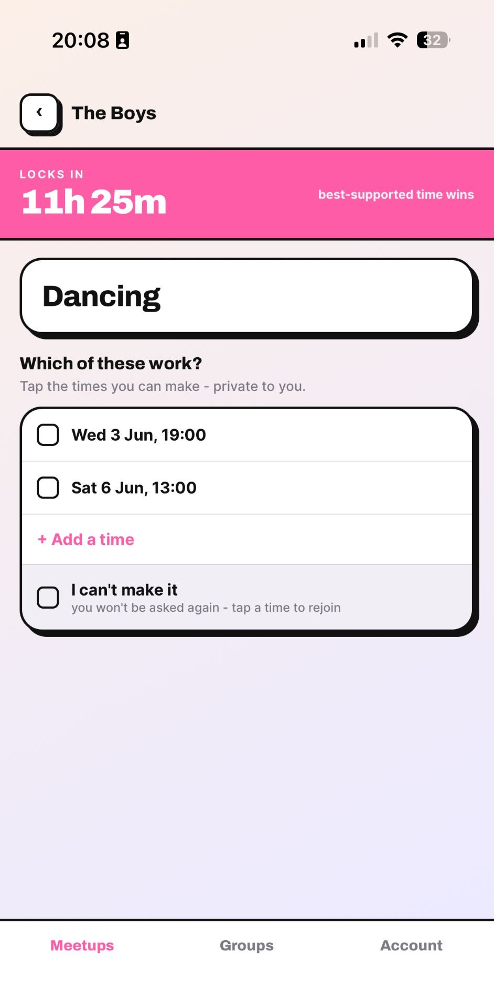
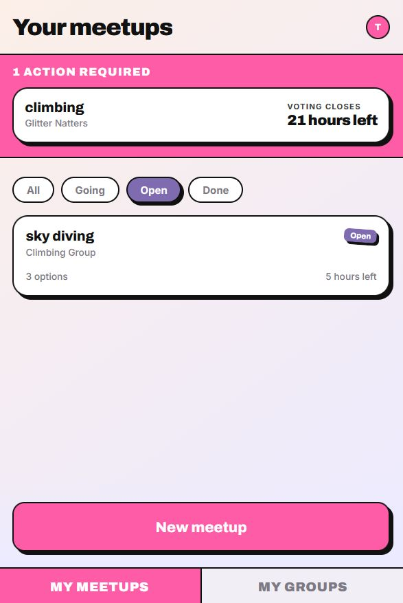
DRP_02BeThere
Approach
How we ran the research
We worked the Double Diamond across the term, one phase per milestone. From M3 the build itself was the probe: people drove a deployed product on their own phone, so every later finding came from a real person meeting a real artefact.
Survey n=47 and Round 1 interviews
Validated insights and the how-might-we
Live builds tested in Rounds 2 and 3
Evaluation and impact
Method
Who and when
Why this method
Friend Meetup Dynamics survey
47 respondents, 19-21 May 2026
Shows how widespread the behaviour is - is plan-death common, what do people do when unsure - before we commit to a build.
Round 1 discovery interviews
Luca, Luke, Matthew, Noah's friend; pre-build
Surfaces why someone sends a "maybe" - the felt mechanism behind the numbers.
Round 2 iteration usability
Tom, Felicity, Nathan, Fiza; M3, think-aloud on the live app
Reacting to a working artefact gave the sharpest findings: anonymity validated, the conditional challenged.
Round 3 M4 usability
Luca, Nathan, Zack, Will, Fangyi, Thomas; M4, live web funnel
Onboarding, web-link joining and plus-ones, tested on the real funnel with fresh users.
Reflection
Prototype-led research was our most useful technique. As Lukas put it, "if we start with an implementation in code then we can use that to dig into people's brains." Deploying each model and watching people use it beat asking - the hard part was staying non-leading, so we coached each other to drop the jargon.
Human-Centred Design PortfolioApproach
People · Personas
Meet Vasanth
The organiser.
Age 21
Studies Law at St. Andrews
Enjoys playing volleyball and board games
Loves to cook for his friends
Extroverted and reliable
Early on in our DRP project, we created Vasanth, and used his story to guide BeThere's development. Vasanth was intended to be an embodiment of the heart of a friend group. Popular and outgoing, his hobbies are deeply social, and he lives for his friends. He is selfless and responsible, which naturally leads him to take on the role of organiser.
However, like many other university students, he still struggles with loneliness.
He tries tirelessly to see his friends more but the burden and pressure of being the initiator is leading him to feel frustrated and hopeless. Poor communication, uncertain replies, and a feeling of being the only one brave enough to initiate have all fuelled Vasanth's struggle. What was once a feeling of joy at the thought of making new plans, is now an empty dread at the reality of chasing responses.
Vasanth's experiences shaped every core decision in BeThere's design. The anonymous suggestion feature exists because of his embarrassment at chasing replies into silence. The voting system exists because he shouldn't have to assert a time and hope everyone agrees. The deadline-based resolution exists because the open-ended nature of group chats is precisely what lets plans die. Throughout the project, we returned to Vasanth whenever we needed to sense-check whether a design decision genuinely addressed the problem or just added features.
Human-Centred Design PortfolioPeople
People · Personas
Meet Milly
The passive participant
Age 19
Studies English Literature at St. Andrews
Likes to play cello and read
Recently joined her university's netball society and Vasanth's friend group
Shy and introverted
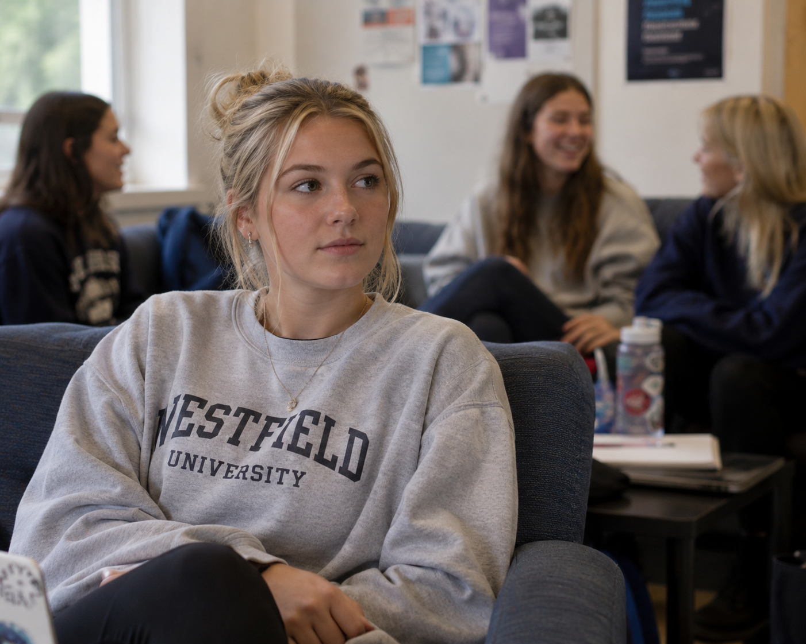
Appreciating that every failed meetup has two sides to it, we realised the necessity of having a second persona, so we proposed Milly. She is very introverted, and symbolises the quiet participants of a friend group who prefer tagging along to organising their own events.
We did not mean Milly to be antisocial. For this reason, we chose Milly to be a new member of Vasanth's friend group, explaining her shyness without giving the impression she didn't want to engage with her new friends. This allowed us to explore the reasons why people give vague 'maybe' replies, without the assumption that these people simply don't want to see their friends, which we didn't think was the full picture. Milly directly motivated the conditional attendance feature, without her perspective, we may never have recognised that for some people, attending isn't a simple yes or no but a decision that depends entirely on who else is going.
Human-Centred Design PortfolioPeople
People
Stakeholders
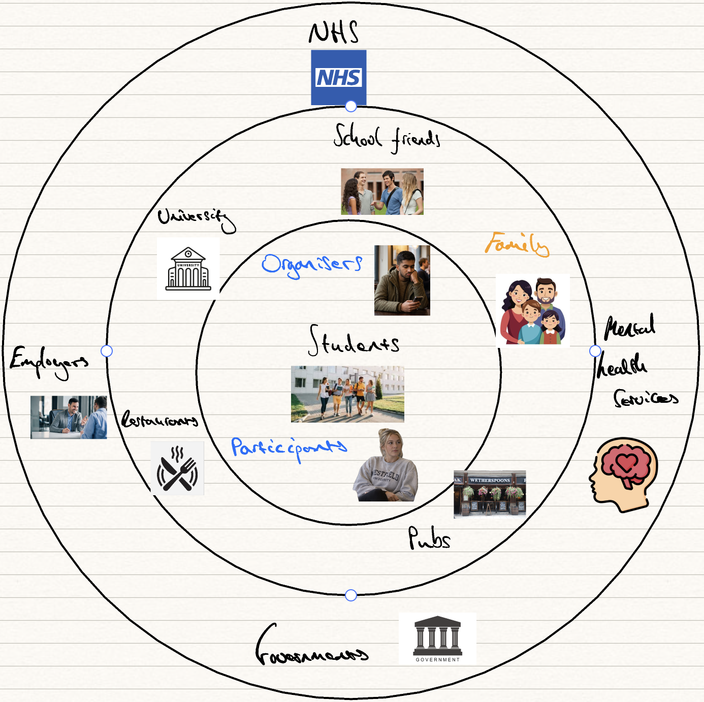
Undergraduates are our main stakeholders, but within this group we identified two further categories: organisers and participants. Organisers are people like Vasanth, who make meetup suggestions to their friend groups and carry them all the way through taking on a myriad of responsibilities: working out each friend's schedule, picking times that suit everyone, chasing hesitant or unresponsive people. On the other side we have participants like Milly, who rarely suggest meetups themselves but take part; from interviewing students, we found these people typically don't like to attend events without someone they know quite well - their attendance is dependent on others going and when they're not sure those friends will go they become non-responsive or reply with a 'maybe'.
Thinking about the wider impacts, if undergraduates spend more time with their friends, those places they meet will benefit, such as pubs and restaurants. We'd also expect to see improvements to larger university communities as the effects of happier, tighter-knit friend groups ripple outwards. We're the most connected generation, and yet we're the loneliest. The NHS is reporting a loneliness crisis, 15-24s spend 70% less time with their friends in-person than two decades ago, and over 25% of lonely young people have sought therapy; if we can make it easier for friends to meet-up in-person, we can help fix this.
Time-with-friends figure: US Surgeon General, 2023.
Human-Centred Design PortfolioPeople
Current / Future State
User Journey Maps
To provide a strong basis for our problem, we constructed a realistic scenario that could be told from two perspectives, those of Vasanth and Milly. We chose a pub quiz as the setting, since this was an event where if Milly turned up without a close friend there, there was high potential for it to be awkward and leave Milly feeling alienated from her new friends. These high social stakes provided the perfect background to map out the reasons why people respond with 'maybe'.
From Vasanth's perspective, it's an event that requires an explicit organiser to choose a location and reserve a table for example.
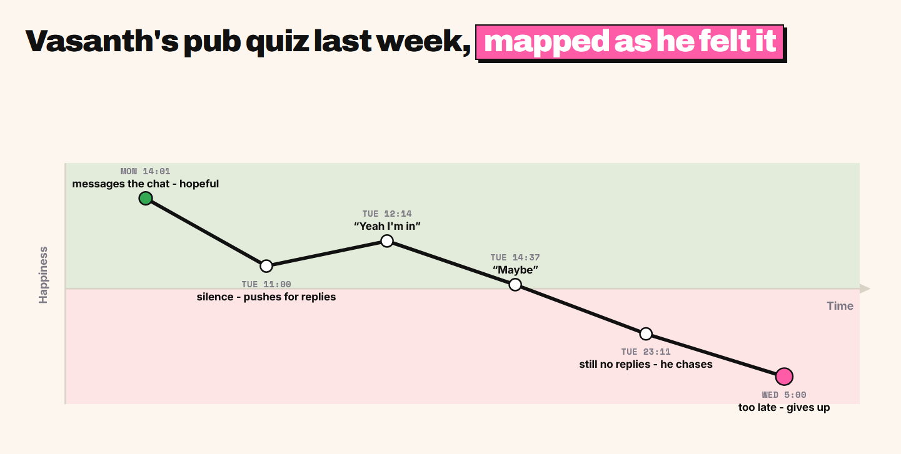
From Milly's perspective, it's a daunting social event that she would be much more comfortable attending if she has a close friend there.
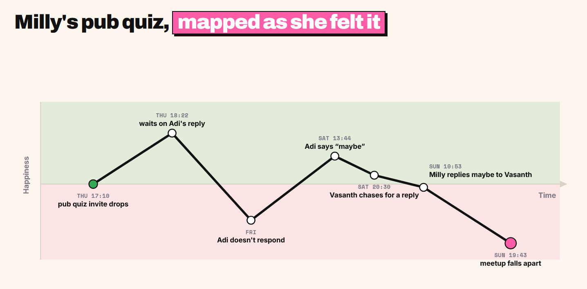
Human-Centred Design PortfolioCurrent / future state
Current / Future State
How meetups fall apart
To determine how meetups are made and how they fall apart, we conducted interviews with undergraduates from different universities. Interviewing a mix of people who typically organise meetups and people who remain passive in the group chat allowed us to gain insights into all angles of the problem landscape, ensuring any solutions we come up with directly benefit everyone.
Someone who typically organises meetups told us
"I do all the work - where we're going, who's paying, making sure everyone's free - then half of them don't even reply and it just dies. All that effort for nothing."
A few passive participants told us
"Honestly I wasn't sure I'd go - and everyone else seemed just as unsure. Once a couple of people went quiet, I just figured it wasn't happening."
"If I'm meeting a friend of a friend, my attendance is conditional on my friend being there. I'll wait for them to respond first, then decide."
It is clear that organising a meetup is one-sided and exhausting. Pushing for replies is awkward and it feels humiliating repeatedly sending messages into the chat that don't get a response. We've gathered that uncertainty compounds uncertainty, and some people's participation is contingent on others, especially when members of the group are not particularly close.
The current state of meetup organising is as follows. Someone suggests a plan on the group chat, sometimes asking for everyone's availability first, sometimes asserting a time and place. With every question the organiser asks on the group chat, the likelihood of the meetup taking place lowers. Some people don't reply on the group chat, others don't reply because the people they want to go with also haven't replied yet. The effects are amplified when not every member of the group is close with each other.
Our interviews surfaced these patterns, but to test how widespread they were we surveyed 47 students about how they plan meet-ups. The results confirmed that hesitancy is the norm, not the exception: 87% admitted to sending a "maybe" or delaying their reply to a plan they were unsure about. This hesitancy has real consequences, with over half of respondents saying that more than a third of their meet-ups never make it out of the group chat, and 60% reporting that the time gets moved half the time or more. Taken together, the survey shows that the "maybe" response is not a minor annoyance but the single point at which group plans most often collapse, which is exactly what our solution is designed to resolve.
Human-Centred Design PortfolioCurrent / future state
Current / Future State
The preferred future
The preferred future experience removes the group chat from the equation entirely. Rather than one person shouldering the organising and chasing replies into silence, anyone in the group can suggest a meetup anonymously, taking the pressure and potential embarrassment off the person suggesting. Others vote on the times that work for them, and the choice resolves automatically at a set deadline. Crucially, no one has to publicly commit while everyone else hesitates. People's intentions, including conditional ones like "I'll go if my close friends go", stay hidden until the deadline, at which point everyone is resolved to a clear Yes or No. The result is an experience where Vasanth no longer has to push for replies and Milly no longer has to wait anxiously on others before deciding: the uncertainty that used to compound in the group chat simply never surfaces, and the meetup goes ahead.
The same event, run through this experience, reverses the curve that used to kill it. Vasanth's journey now climbs from suggestion to a meetup that actually happens:
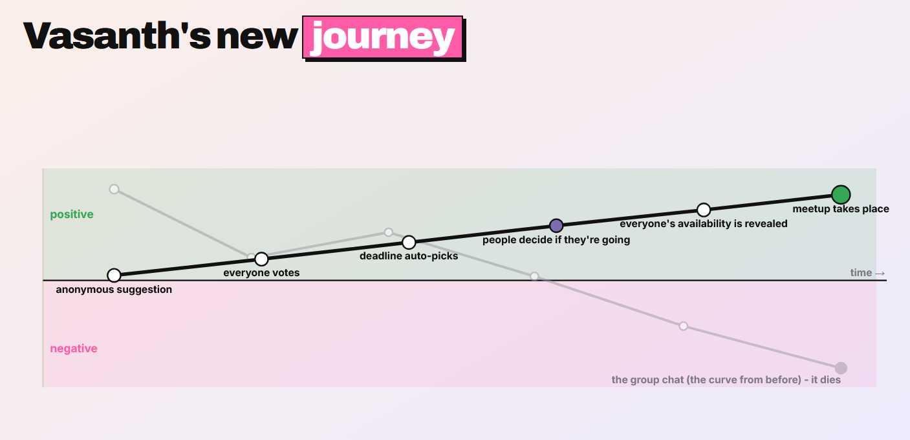
Opportunity Statement
Taken together, the interviews and survey point to a single leverage point: the moment hesitancy becomes visible in the group chat. Removing that friction, for both the organiser chasing replies and the participant waiting on others, is the opportunity we set out to address:
"How might we reduce hesitancy in undergraduate friend groups when planning to meet up so that groups go from frustrating 'maybe' responses to a clear consensus?"
Human-Centred Design PortfolioCurrent / future state
Current / Future State
Service blueprint
The future journey runs on one typed system. There is no scheduler - phases settle lazily on read - and the privacy promises that make the moment feel safe are enforced in the server, out of the client's reach.
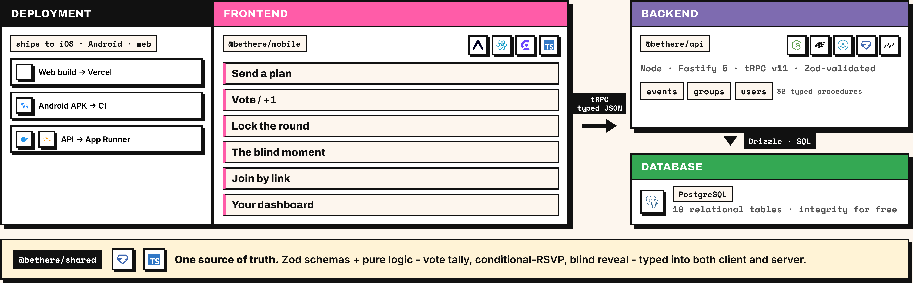
The promises that make the moment feel safe - enforced in the server, not the screen
No one sees who proposed it
Creator anonymity is on by default; the read layer returns only a private "is this me?" boolean, never the creator's id.
No one sees how you voted
Collecting shows the +1 totals for momentum but never the voter set; the moment reveals nothing about others until it resolves.
A dead plan dies quietly
If it misses quorum it fizzles on the next read and drops out of every dashboard - no push, no awkward dead thread.
These promises are structural, not copy: anonymity and the blind moment live in the server's procedures (events.ts, db/schema.ts), so they cannot leak to the client.
Human-Centred Design PortfolioFuture state
Testing and Validation
Our Methodology
To ensure our development remained focussed on user needs, we conducted several interviews daily with university students, our target audience. Our approach was generally to let the users explore the app themselves, with minimal guidance at first. This ensured we understood exactly what a new user would encounter and how they would proceed. This helped us identify problems in our app's user experience, and keep our user interface as simple and clear as possible. Furthermore, this often led to interviewees volunteering ideas and suggestions that we would have not otherwise considered.
Let the users explore the app themselves, with minimal guidance at first.
As time went on, we understood the main stakeholder groups of our app better, and decided to only interview people who were more of the organisers of their group with regard to the 'suggest a meetup' feature of our app. Likewise, we started to only interview the more passive participants of groups about the features attendants used like the conditional attendance feature described below. This targeted interviewing of stakeholders helped us to understand stakeholder needs better, and produce an app that fulfilled them.
Human-Centred Design PortfolioTesting and validation
Testing and Validation
Suggesting a meetup
Concept to experience: the suggest flow evolved across four touchpoints, from a paper form to the final shipped wizard. Each step below was driven by what users told us.
1 - Paper mock-up
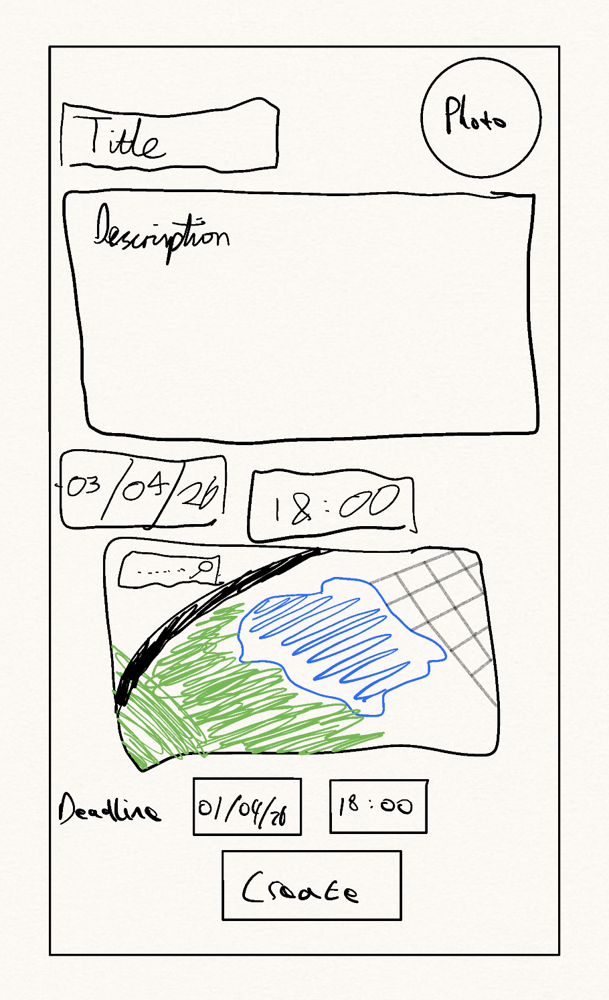
2 - First digital form
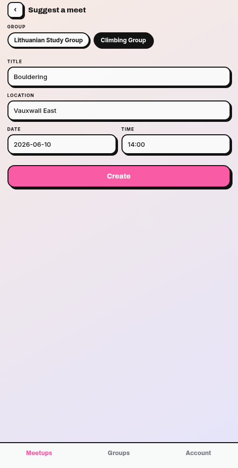
As seen in the first image above, we started with a mock-up of a simple form and showed this design to users. It was initially met positively, but after creating a digital version of our mock-up (as shown in the second screenshot), we were told:
"Having a set time seems quite restrictive - it would be nice to agree on a time within the group."
This revealed a fundamental assumption we had built the entire initial design around: that the organiser would arrive with a fixed time in mind. In reality, for someone like Vasanth, the whole point is to find a time that works for everyone, a fixed time input was solving the wrong problem entirely. Reflecting on this, it also exposed a tension we hadn't considered: giving the organiser too much control over the details of a meetup risked replicating the exact top-down dynamic that makes organising feel burdensome and one-sided in the first place. A collaborative voting system for time naturally addressed this, and we realised the same logic extended to activity, if uncertainty about time causes hesitancy, uncertainty about whether you'll enjoy the activity does too. Having created a new digital touchpoint incorporating both, we interviewed new users, who told us:
Human-Centred Design PortfolioTesting and validation
Testing and Validation
Suggesting a meetup - continued
"It takes me a second to read through and understand where to put every single thing and what each thing does, especially with the boxes. Maybe more space between the boxes, or laying it out a bit differently."
Clearly, we had overcomplicated our UI by designing for our own mental model of the meetup creation process rather than the user's. We had assumed that presenting all the information fields together would feel efficient, but in reality, it revealed that we were thinking like developers, not like someone casually floating a plan to their friends. This led us to a 'wizard' style design with separate pages for each piece of information, reducing the cognitive load at each step. Crucially, this also better reflected how someone actually thinks about organising a meetup, not all at once, but one decision at a time. Subsequent users navigated the flow with no difficulty , whereas previously we had needed to explain the layout every time, validating that the change addressed the root cause rather than just the surface complaint. However, new issues emerged:
3 - Wizard with three modes (Float it / Rough plan / It's set)
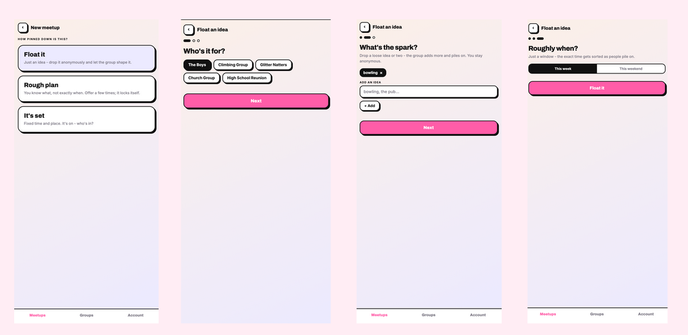
"These options are quite confusing - I don't really understand when you would ever use the rough plan option"
"I could see this being used to just check for people's availability - sending out a vague idea of 'I want to meetup' and seeing what everyone wants to do."
Human-Centred Design PortfolioTesting and validation
Testing and Validation
Suggesting a meetup - continued
4 - Final flow with optional fields
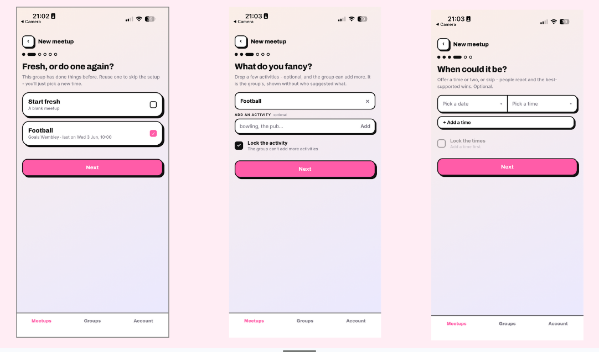
These two ideas we found particularly interesting. Our users loved the idea of just floating a meetup, but were less keen on the three options we provided them with. This led us to create our final iteration (as shown in the fourth and final set of screenshots above) of the 'suggest a meetup' flow, where we use optional fields so that users who don't know much about the meetup they are suggesting can skip these, acting in the same way the float an idea concept did, whilst avoiding confusing options like 'rough plan' and 'it's set'.
Human-Centred Design PortfolioTesting and validation
Testing and Validation
Conditional Attendance
The conditional ("I'll go if...") evolved from a free list, through an over-engineered and/or system, to two simple options users understood instantly.
1 - First mock-up
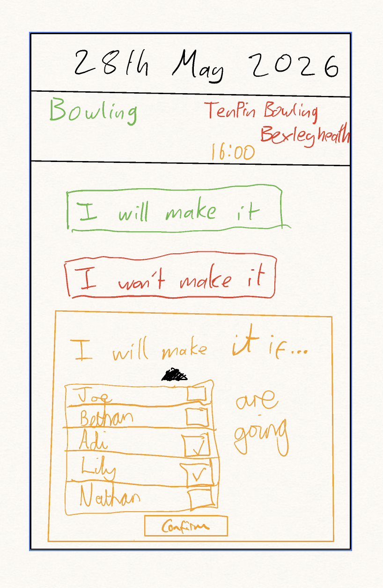
2 - And / or controls
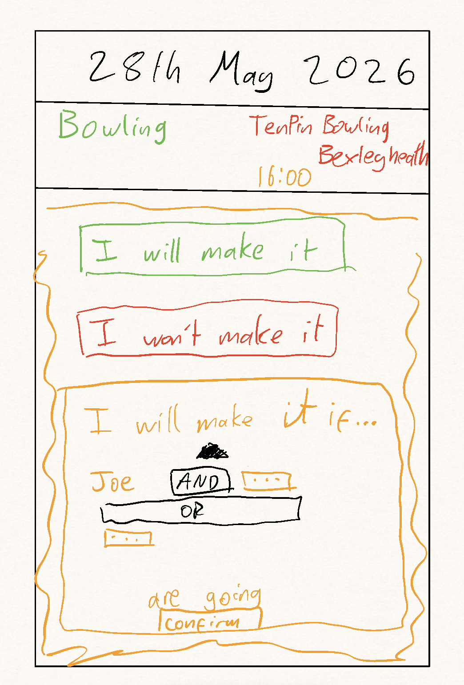
3 - Final mock-up
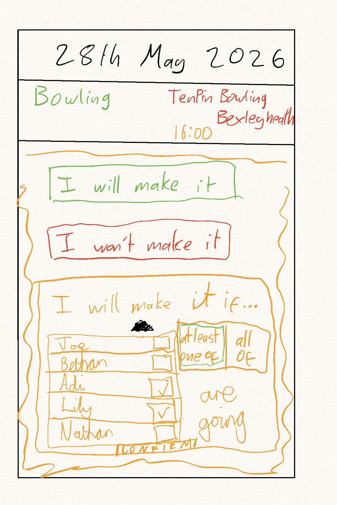
Our earlier interviews with stakeholders made us realise we needed some system of capturing people's dependence on other people going to a certain social event. To address this problem and hence to reduce people's hesitation about going to social events, we created the mock-up shown above in the first image. The idea was to give each user the option to say they'll go to an event if the specified people are going too. We showed this to users, however we had to explain how it worked, and users told us:
"It's not obvious how the dependence works, I'm not sure whether I am going if all of these people go, or if it's just when one of these people go"
The ambiguity stemmed from users not knowing whether they needed all or just one of their specified friends to attend. Our instinct was to solve this precisely, giving users explicit 'and' and 'or' controls so they could express their exact conditions (as shown in the second mock-up). However, this was an overcorrection: in trying to eliminate every possible edge case, we had created something more confusing than the original problem:
Human-Centred Design PortfolioTesting and validation
Testing and Validation
Conditional Attendance - continued
"I don't understand how to use this. Would a meetup ever be this complicated?"
This brought us back to the insight that had motivated the feature in the first place: Milly's attendance isn't governed by complex logic, it's governed by one simple question, is someone I'm comfortable with going? By overcomplicating the conditions system we had lost sight of the human reality behind the feature. The final design (as shown in the final mock-up and the digital touchpoint) reflects this: two options, 'if one of these people go' or 'if all of these people go', which cover the vast majority of real social dependencies without asking users to think in boolean logic.
Crucially, subsequent users understood the feature immediately without explanation, a clear contrast to both previous iterations, and a sign that the design had finally matched the human behaviour it was trying to capture.
The shipped touchpoint
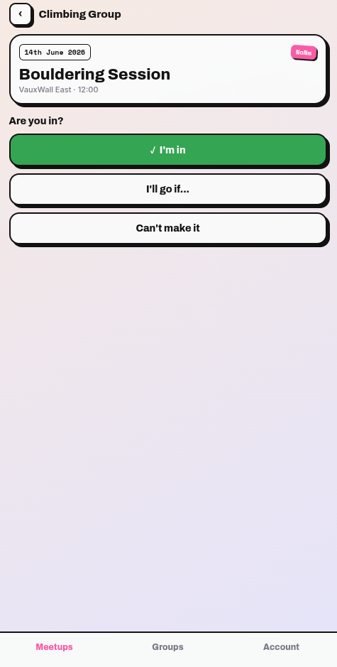
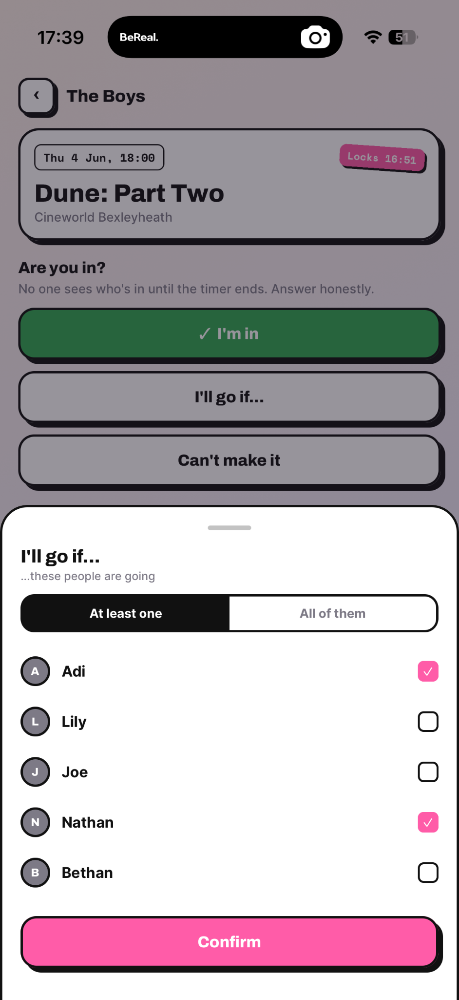
Human-Centred Design PortfolioTesting and validation
Testing and Validation
From finding to change
The artefact that kept us honest: every change we shipped points back at a real survey number or interview quote. If a finding did not exist, the feature did not get built.
Finding (source)
Insight
Change shipped
87% send "a maybe" or delay when slightly unsure; only 6 of 47 give a clean answer. (survey, n=47)
Hedging is the default, and the failure mechanism.
A blind, deadlined RSVP - Yes / Can't make it / "I'll go if [people]" - no public maybe, no running tally.
"The organisers should have an option to be anonymous... no pressure on that person at all" (Tom); only 6 of 47 mostly lead.
Anonymity reframes a plan as group consensus.
Creator anonymity is always on - the group sees the meetup, never who proposed it. No toggle.
"You split the load across your friends... without feeling like you're dragging everyone" (Felicity);83% say smaller groups are easier.
People want to co-decide, not be organised.
Two member-fed candidate lists, TIME and ACTIVITY, anyone can add to and +1; counts public, names never.
"A checkbox or a switch... this is a concrete event, you cannot change it... like a football match" (Tom); confusion over three suggest modes.
One switch should cover concrete and open, not three modes.
lockTimes / lockActivity flags; a fully pinned plan skips straight to a blind moment. The three-mode fork was deleted.
"The deadline would be better... but only if there was a push... like BeReal, it goes off, ding ding ding" (Tom).
A blind, deadlined, push-driven yes/no beats an open poll.
Lock-in deadline plus device-local "Voting closes" / "RSVP closes" reminders.
The countdown bar turned greener as the deadline neared, signalling "you're nearly there" exactly when urgency should rise. (M3 review)
Urgency was being signalled backwards.
The green drain bar became a plain-language countdown ("Voting closes in 2 days"); urgency shown in pink under one hour.
Felicity could not name a friend in a conditional, even privately (R2); Tom liked naming people.
Felt privacy is not the same as technical privacy.
The "Go if [people]" copy was softened and defaulted to "At least one" rather than a named person.
"Hoping people download it is probably not it" (Fangyi Lin); "a website would be less stressful" (Felicity); "it's just a link" (Luca, R3).
The download is the adoption barrier, not the idea.
Invite links and join codes, plus a no-download meetup share link that converts to a responding member.
Human-Centred Design PortfolioTesting and validation
Impact
Impact
We frame impact modestly: a 47-response survey, three interview rounds and a working build, but no longitudinal usage data. The claims below are the change the design is intended to produce, told through Vasanth and Milly and tied to evidence the problem is real.
Vasanth The Organiser
Before
Chasing replies, carrying the plan alone: "I'm normally the only one who actually wants to do it."
With BeThere
He floats a plan anonymously and it stops being his job to push - the group owns the meetup, not the organiser.
Milly The Participant
Before
Hedges with a public "maybe" she never escapes, and stays home unless she knows a friend is going.
With BeThere
She says yes privately and conditionally - "I'll go if" - and it only surfaces if enough others matched her. Names never shown.
Wider impact, carefully bounded
The friction we ease is not trivial. 15-24s spend ~70% less time with friends in person than two decades ago (US Surgeon General, 2023); 40% of UK 16-24s feel lonely often or very often, the loneliest age group (BBC Loneliness Experiment, 2018). Fewer dead plans ripples into university counselling load, NHS mental-health provision, society engagement and local venues. We do not claim BeThere cures loneliness - we have not measured wellbeing - but every plan that does not die is a small push against that drift.
Societies & organisers
Higher turnout, less burnout - the plan belongs to the group, not one person.
Universities & support
Fewer students drifting into isolation as plans keep dying in the chat.
Venues & hosts
More groups that actually show up, instead of maybe-then-cancel.
"I care less about what we do, I just want to see them." - Felicity
That line is the whole point: the value is the gathering, not the logistics. We turned it into our impact asset - the cover story overleaf.
Human-Centred Design PortfolioImpact
Impact
Impact asset: the cover story
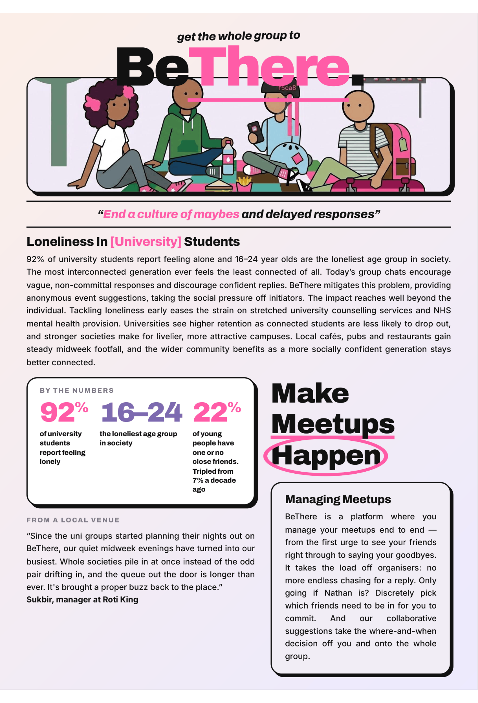
Our impact asset carries the loneliness context and the no-organiser, no-public-maybe promise into a single forward-looking artefact, built on the M4 review feedback and deliberately distinct from the pitch leaflet.
Human-Centred Design PortfolioImpact
Reflection
What HCD did to the product
The strongest evidence that we did human-centred design, not feature-led design, is that the product model itself changed in response to users, repeatedly. The product is smaller and sharper than the one we first imagined, and that narrowing is the clearest signal we were listening.
DELETED
A feature: the three-mode suggest fork collapsed into two lock flags.
PROMOTED
A flag to a principle: anonymity became always-on, the only mode.
LEFT OPEN
A real tension: naming people in a conditional, surfaced not designed away.
What we would do differently
Prioritise onboarding earlier, so the iteration interviews tested the whole journey, not just the core loop. Onboarding only landed in M4.
Open work, framed by user needs
The felt-privacy problem in the conditional (test Felicity's "rank importance" alternative).
Reliable remote push (currently device-local, blocked on a dev build rather than Expo Go).
Competing with the group chat people already live in (the web-first link is the first move).
We deliberately did not collect SUS, task-success or telemetry; the quantitative-evaluation report scopes those instruments, and we will not present an intended outcome as a measured one until they are run.
Reflection
The project's own history is the best evidence of the process: a cancelled feature (scaling moment length by distance), a betting-market idea dropped before it began, three suggest modes collapsed into two flags, and a conditional softened after one participant could not face it. These are the marks of a design that kept changing because real people kept telling us to.